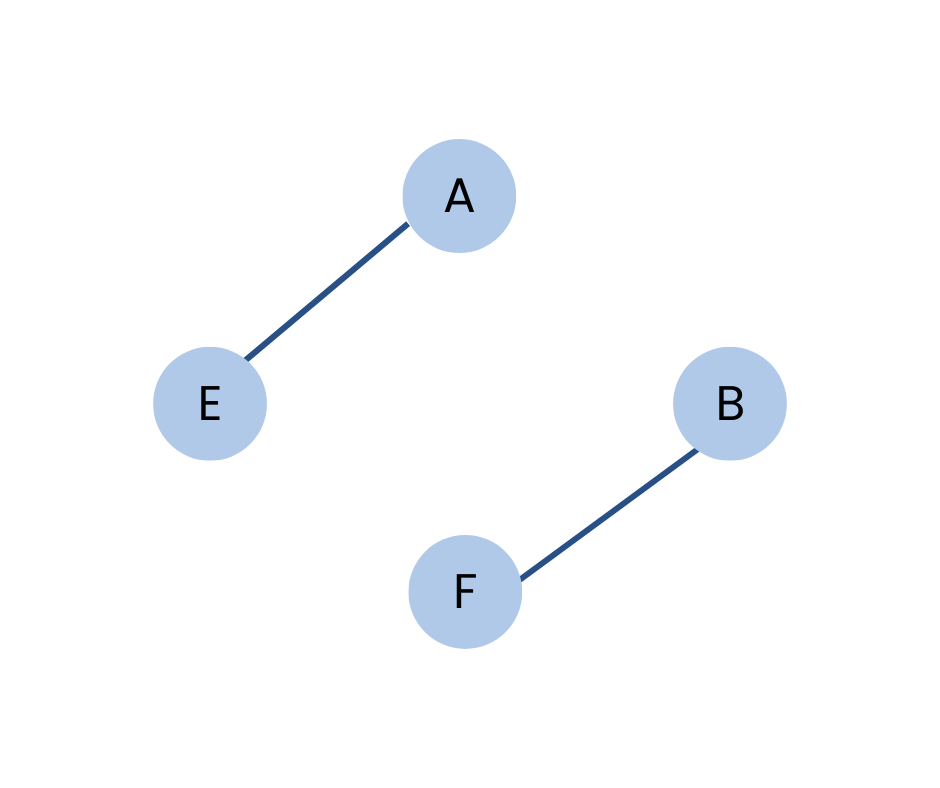

Disconnected Graph
The graph in which at least one node is not reachable from a node is known as a disconnected graph.

Applications
- Clustered Social Networks: Models social groups that are isolated or have minimal interaction with others.
- Distributed Computing: Represents disconnected network partitions that can be processed independently for parallel computation.